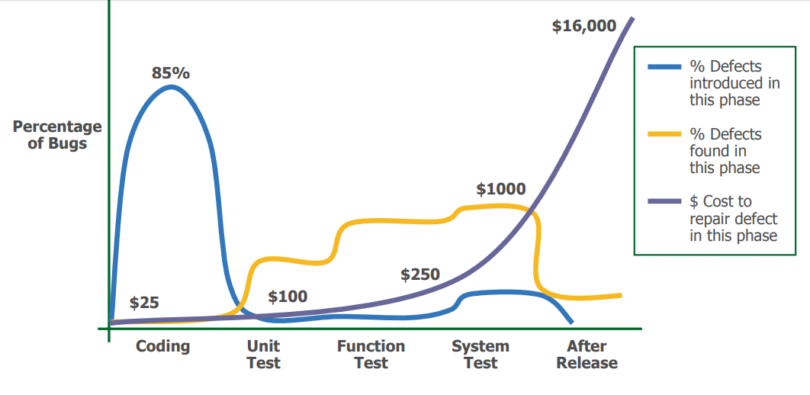

Building, Testing and Debugging Scientific Software¶
Objectives¶
- Build systems: Advanced Makefiles, introduction to CMake for managing multi-file and multi-platform projects.
- Debugging: GDB, Valgrind for detecting memory errors and leaks.
- Software testing:
- Principles: Unit testing, integration testing.
- Test frameworks in C (e.g., Unity).
- Importance of testing for regression prevention and validation.
- Code documentation: Doxygen.
Makefiles¶
Dependency Management¶
- How to determine which files have changed?

- dependencies:
main.odepends on changes inlib.h
Makefile¶
-
A
Makefileuses a declarative language to describe targets and their dependencies. -
It is executed by the
makecommand, which allows building different targets. -
makeuses timestamps to determine which files have changed. -
makeevaluates rules recursively to satisfy dependencies.
Makefile Rule¶
prog: main.c lib.c lib.h
clang -o prog main.c lib.c -lm
target: dependencies
\t command to build the target from the dependencies
Separate Compilation¶
prog: main.o lib.o
clang -o prog main.o lib.o -lm
main.o: main.c lib.h
clang -c -o main.o main.c
lib.o: lib.c lib.h
clang -c -o lib.o lib.c
If lib.c is modified, which commands will be executed?
Phony Targets¶
You can add targets that do not correspond to a produced file. For example, it is useful to add a clean target to clean the project.
.PHONY specifies that the clean rule should always be executed. Declaring all phony targets ensures they are always called (even if a file with the same name is created).
Default Rule¶
- If
makeis called with a rule, that rule is built. - If
makeis called without arguments, the first rule is built. It is customary to include a defaultall:rule as the first rule.
Variables¶
CC=clang
CFLAGS=-O2
LDFLAGS=-lm
prog: main.o lib.o
$(CC) -o prog main.o lib.o $(LDFLAGS)
main.o: main.c lib.h
$(CC) $(CFLAGS) -c -o main.o main.c
lib.o: lib.c lib.h
$(CC) $(CFLAGS) -c -o lib.o lib.c
Variables can be overridden when calling make, e.g.,
Special Variables¶
$@ target name
$^ all dependencies
$< first dependency
prog: main.o lib.o
$(CC) -o $@ $^ $(LDFLAGS)
main.o: main.c lib.h
$(CC) $(CFLAGS) -c -o $@ $<
lib.o: lib.c lib.h
$(CC) $(CFLAGS) -c -o $@ $<
The last two rules are very similar...
Implicit Rules¶
Before¶
With Implicit Rule¶
Other Build Systems¶
-
automake / autoconf: automatic generation of complex makefiles and management of system-specific configurations.
-
cmake, scons: successors to Makefile, offering more elegant syntax and new features.
CMake¶
Why CMake?¶
- Advantages of Makefiles:
- Simplicity and transparency.
- No additional tools required.
-
Direct control over the build process.
-
Advantages of CMake:
- Cross-platform support (Linux, Windows, macOS).
- Generates build files for multiple build systems (Make, Ninja, etc.).
- Modular and target-based design.
- Built-in support for testing, installation, and packaging.
General Design of CMake¶
- CMake as a Meta-Build System:
- Generates build files for different generators (e.g., Make, Ninja).
-
Abstracts platform-specific details.
-
Workflow:
- Write
CMakeLists.txtto define the project. -
Configure the project:
-
Build the project:
Out-of-source builds are recommended to keep source directories clean.
Basic Structure of CMakeLists.txt¶
cmake_minimum_required: Specifies the minimum version of CMake required.project: Defines the project name and the programming language(s) used.set: Sets variables, e.g., C standard version.
Adding an Executable¶
- Creates an executable named
my_executable.
Adding a Shared Library¶
- Creates a shared library named
libmy_library.so(on Linux).
Linking Libraries to Executables¶
add_library(my_library SHARED src/library.c)
add_executable(my_executable src/main.c)
target_link_libraries(my_executable PRIVATE my_library)
add_library: Creates a shared library.add_executable: Creates an executable.target_link_libraries: Links the library to the executable.
PRIVATE means that my_executable uses my_library, but my_library does not need to be linked when other targets link to my_executable.
Library dependency transitivity¶
add_library(libA SHARED src/libA.c)
add_library(libB SHARED src/libB.c)
target_link_libraries(libB PUBLIC libA)
add_executable(my_executable src/main.c)
target_link_libraries(my_executable PRIVATE libB)
my_executableis linked tolibBand also tolibAbecauselibBlinks tolibAwithPUBLIC.- If
libBlinked tolibAwithPRIVATE,my_executablewould not be linked tolibA. - If
libBlinked tolibAwithINTERFACE,my_executablewould be linked tolibAbut notlibB. - See this reference for more details.
Global Include Directories¶
- Adds the
includedirectory globally for all targets. - Limitation: Can lead to conflicts in larger projects.
Target-Specific Include Directories¶
- PUBLIC: Include directory is needed when building and using the library.
- PRIVATE: Include directory is needed only when building the library.
- INTERFACE: Include directory is needed only when using the library.
Porting our minimal Makefile example to CMake¶
cmake_minimum_required(VERSION 3.15)
project(MyProject LANGUAGES C)
# Add the executable target
add_executable(prog main.c lib.c)
# Specify include directories for the target
target_include_directories(prog
PRIVATE ${CMAKE_CURRENT_SOURCE_DIR})
# Add compile options
target_compile_options(prog PRIVATE ${CFLAGS})
# Link libraries if needed
target_link_libraries(prog PRIVATE m)
Debug vs Release Builds¶
- Debug Build:
- Includes debug symbols for debugging.
-
Example flags:
-g,-O0. -
Release Build:
- Optimized for performance.
- Example flags:
-O3,-DNDEBUG.
Setting Build Types in CMake¶
if(NOT CMAKE_BUILD_TYPE)
set(CMAKE_BUILD_TYPE RelWithDebInfo CACHE STRING "Build type" FORCE)
endif()
-
Build types:
Debug,Release,RelWithDebInfo,MinSizeRel. -
CACHE: Makes the variable persistent across CMake runs. In out-of-source builds
CMakeLists.txtis not re-evaluated on subsequent runs. - FORCE: Overrides any previous value.
- STRING: "Build type" provides a description in CMake GUI.
Adding Compiler Flags¶
target_compile_options(my_library PRIVATE
$<$<CONFIG:Debug>:-g -Wall>
$<$<CONFIG:Release>:-O3 -DNDEBUG>
)
- Generator Expressions:
$<CONFIG:Debug>applies flags only for Debug builds.
Installing Targets¶
- Installs the shared library to the
libdirectory. - Installs public headers to the
includedirectory.
Using GNUInstallDirs¶
include(GNUInstallDirs)
install(TARGETS my_library
LIBRARY DESTINATION ${CMAKE_INSTALL_LIBDIR}
PUBLIC_HEADER DESTINATION ${CMAKE_INSTALL_INCLUDEDIR}
)
- Defines standard GNU library and include directories paths.
Generating and Building the Project¶
- Configure the Project:
-
Generates build files in the
builddirectory. -
Build the Project:
- Run the Program:
Best Practices for CMake¶
- Use Target-Based Commands:
- Prefer
target_include_directoriesoverinclude_directories. -
Prefer
target_link_librariesover global linking. -
Organize
CMakeLists.txt: - Group related targets together.
-
Use comments to explain sections.
-
Avoid Global Commands:
-
Avoid
include_directoriesandlink_librariesglobally. -
Use Modern CMake Features:
- Generator expressions for conditional configurations.
FetchContentfor managing external dependencies.
Debugging Tools¶
GDB: GNU Debugger¶
Valgrind: memory debugging and leak detection¶
Other tools: ASAN, UBSAN¶
Software Testing¶
Importance of Software Testing¶
- 1996: Ariane-5 self-destructed due to an unhandled floating-point exception, resulting in a $500M loss.
- 1998: Mars Climate Orbiter lost due to navigation data expressed in imperial units, resulting in a $327.6M loss.
- 1988-1994: FAA Advanced Automation System project abandoned due to management issues and overly ambitious specifications, resulting in a $2.6B loss.
- 1985-1987: Therac-25 medical accelerator malfunctioned due to a thread concurrency issue, causing five deaths and numerous injuries.
Technical Debt¶

Software Costs¶
Verification and Validation (V&V)¶
- Validation: Does the software meet the client's needs?
-
"Are we building the right product?"
-
Verification: Does the software work correctly?
- "Are we building the product right?"
Approaches to Verification¶
- Formal methods
- Modeling and simulations
- Code reviews
- Testing
Testing Process¶
V Cycle Model¶

Different Types of Tests¶
- Unit Tests:
- Test individual functions in isolation.
-
Test-driven development (TDD): Focus on writing maintainable, simple, and decoupled code.
-
Integration Tests:
- Test the correct behavior when combining modules.
-
Validate only functional correctness.
-
Validation Tests:
- Test compliance with specifications.
-
Test other characteristics: performance, security, etc.
-
Acceptance Tests:
-
Validate requirements with the client.
-
Regression Tests:
- Ensure that fixed bugs do not reappear.
Black-Box and White-Box Testing¶
Black-Box Testing (Functional)¶
- Tests are generated from specifications.
- Uses assumptions different from the programmer's.
- Tests are independent of implementation.
- Difficult to find programming defects.
White-Box Testing (Structural)¶
- Tests are generated from source code.
- Maximizes coverage by testing all code branches.
- Difficult to find omission or specification errors.
Both approaches are complementary.
What to Test?¶
- Running the program on all possible inputs is too costly.
- Choose a subset of inputs:
- Partition inputs into equivalence classes to maximize coverage.
- Test all code branches.
- Test edge cases.
- Test invalid cases.
- Test combinations (experimental design).
Example of Partitioning (1/3)¶
Specification¶
/* compare returns:
* 0 if a is equal to b
* 1 if a is strictly greater than b
* -1 if a is strictly less than b
*/
int compare (int a, int b);
What inputs should be tested?
Equivalence Classes (2/3)¶
| Variable | Possible Values |
|---|---|
| a | {positive, negative, zero} |
| b | {positive, negative, zero} |
| result | {0, 1, -1} |
Example Test Cases¶
| a | b | result |
|---|---|---|
| 10 | 10 | 0 |
| 20 | 5 | 1 |
| 3 | 7 | -1 |
| -30 | -30 | 0 |
| -5 | -10 | 1 |
| ... | ... | ... |
It is possible to select a subset of classes!
Boundary Tests (3/3)¶
| a | b | result |
|---|---|---|
| -2147483648 | -1 | -1 |
Discussion¶
- Automatic test generation.
- Test coverage calculation.
- Mutation testing.
- Fuzzing.
- Importance of using automated testing tools.
- Importance of using continuous integration tools.
Unity Test Framework¶
Introduction to Unity¶
- Lightweight and simple unit testing framework for C.
- Designed for embedded systems but can be used in any C project.
- Provides a set of macros and functions to define and run tests.
Setting Up Unity¶
-
Separate Unity tests into a separate directory, e.g.,
tests/. -
Include the Unity header in your test files:
- Requires linking against the Unity library
- We will link against a static library
libunity.a, since Unity uses CMake, we will use FetchContent to add it to our projects.
Writing Tests¶
- test_functions use
TESTmacros provided by Unity to assert conditions.
void test_function_name(void) {
...
TEST_ASSERT_EQUAL_INT(expected, actual);
TEST_ASSERT_NOT_NULL(pointer);
TEST_ASSERT_TRUE(condition);
...
}
- Reference for all assertions: Unity Assertions
Running Tests¶
- Create a test runner function to execute all tests:
int main(void) ## Boundary Tests{
UNITY_BEGIN();
RUN_TEST(test_function_name);
...
return UNITY_END();
}
SetUp and TearDown¶
- SetUp and TearDown functions can be defined to run before and after each test.
void setUp(void) {
// Code to run before each test
}
void tearDown(void) {
// Code to run after each test
}
Code Coverage with unit tests¶
- Use
gcovorllvm-covto measure code coverage of your tests. - Compile your code with coverage flags:
-
gcov instruments the basic blocks of code to record what is executed during tests.
-
gcovr generate HTML reports showing which parts of the code were covered by tests.
Credits and Bibliography¶
- Course "Automated Software Testing," Sébastien Bardin.
- CMake Tutorial
- CMake Best Practices
- Unity Test Framework
- Valgrind
- GDB
- ASAN/UBSAN
- Doxygen